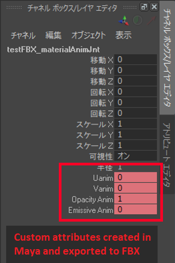

Custom attributes
Warning
Приносим свои извинения за неудобства. Для этой страницы нет перевода на русский язык. Она будет отображаться на английском языке.
Intermediate
You can import custom attributes created in modeling tools such as Maya.
Currently, you can only import custom animated attributes. Attributes that aren't animated can't be imported.

1. Import custom attributes
Import the animation. For instructions, see Import animations.
In the Asset View, select the animation asset.

In the Property Grid, select Import custom attributes.

When the assets are built, Stride imports the custom attributes from the FBX file.
2. Control custom attributes with a script
Add a script to read the custom attributes and copy their value to another property. This can be a separate script, or part of another animation script.
To look up an attribute, use NodeName_AttributeName. For example, if you have the node myNode with the custom attribute myAttribute, use myNode_myAttribute.
Example script
using Stride.Animations;
using Stride.Engine;
using Stride.Rendering;
using Stride.Audio;
using Stride.Rendering.Materials;
using System.Linq;
namespace Sample
{
public class HologramScript : SyncScript
{
public Material MyMaterial;
private AnimationComponent animationComponent;
private AnimationProcessor animationProcessor;
public override void Start()
{
base.Start();
animationComponent = Entity.GetOrCreate<AnimationComponent>();
animationProcessor = SceneSystem.SceneInstance.Processors.OfType<AnimationProcessor>().FirstOrDefault();
}
public override void Update()
{
if (animationProcessor == null || MyMaterial == null)
return;
// Animation result may be Null if animation hasn't been played yet.
var animResult = animationProcessor.GetAnimationClipResult(animationComponent);
if (animResult == null)
return;
// Read the value of the animated custom attribute:
float emissiveIntensity = 0;
unsafe
{
fixed (byte* structures = animResult.Data)
{
foreach (var channel in animResult.Channels)
{
if (!channel.IsUserCustomProperty)
continue;
var structureData = (float*)(structures + channel.Offset);
var factor = *structureData++;
if (factor == 0.0f)
continue;
var value = *structureData;
if (channel.PropertyName == "myNode_myProperty")
emissiveIntensity = value;
}
}
}
// Bind the material parameter:
MyMaterial.Passes[0].Parameters.Set(MaterialKeys.EmissiveIntensity, emissiveIntensity);
}
}
}